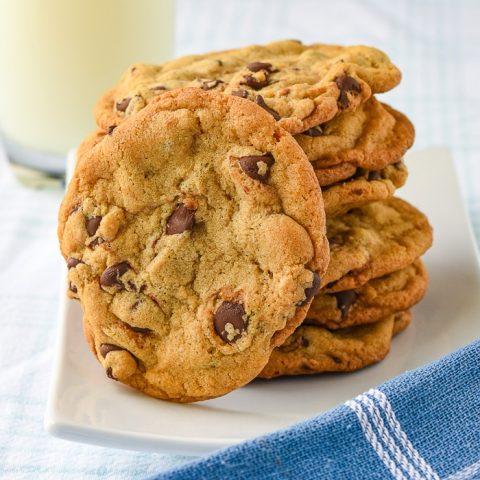

Homemade Chocolate Chip Cookies

How to make delicious chocolate chip cookies from scratch
With this recipe you will be able to follow along and make, chewy on the inside,
crispy on the outside cookies from scratch!
Ingredients
- 1/2 cup white sugar
- 1/2 cup dark brown sugar
- 1 egg
- 1 tsp vanilla extract
- 1/2 tsp kosher salt
- 1/2 tsp baking soda
- 1 1/3 cups of all purpose flour
- 1 cup of large chocolate chips
Steps
- Melt butter until brown(careful not to burn!)
- Let butter cool down for 10 minutes then add the white and brown sugar then mix until lava like consistency
- Add egg and mix thoroughly
- Add vanilla extract, salt, and baking soda then mix thoroughly!
- Add flour and chocolate chips at the same time then mix until flour is entirely incorporated
- Scoop large dollops of mix 2-3 inches apart onto a baking pan with a baking sheet
- Bake @350 degress fahrenheiht for 12 minutes
- Let cookies sit from 5-8 minutes
- Enjoy!